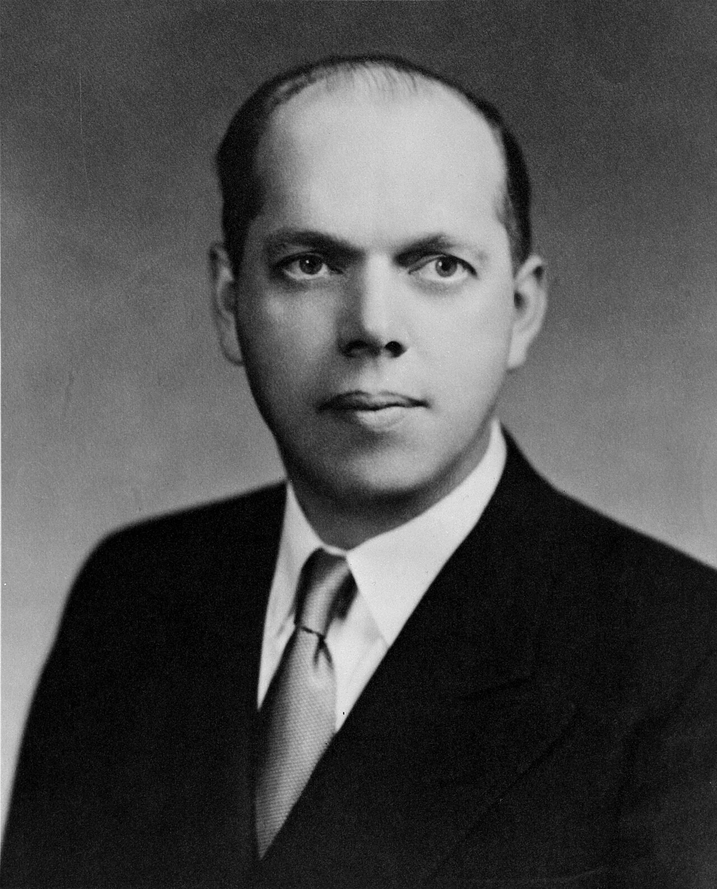
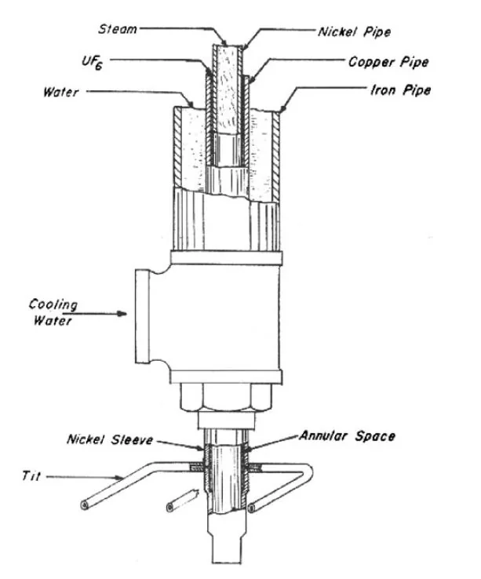
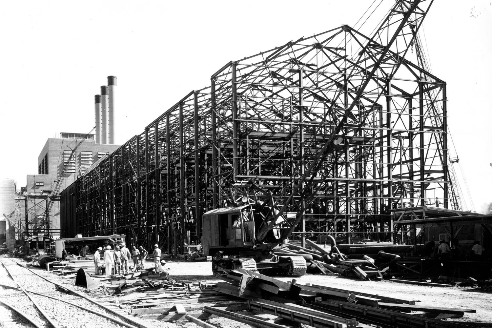
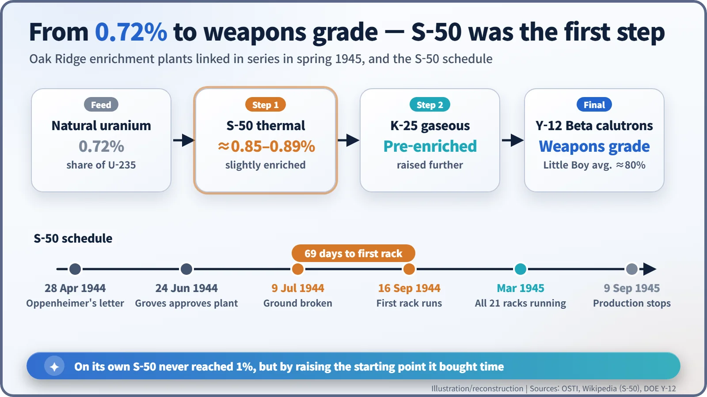
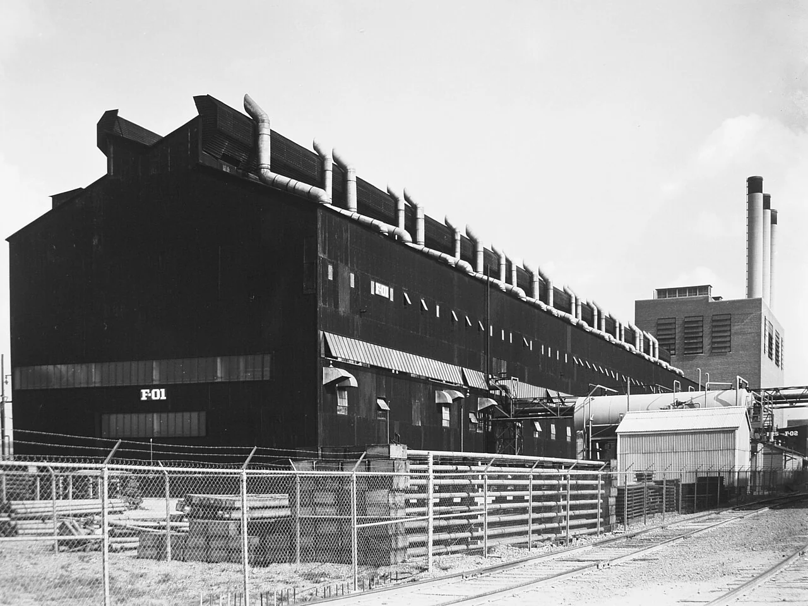

Nuclear History · 104
From Three Pipes to 2,142 Columns — The S-50 Thermal Diffusion Plant (1944–1945)
A Navy experiment with three nested pipes was copied 2,142 times in a few months to give Oak Ridge's struggling enrichment plants a head start.
In 1944 the Manhattan Project's uranium enrichment plants were in trouble. A Navy physicist, Philip Abelson, had a slow but simple method: three nested pipes, hot in the middle and cold outside. In a matter of months it was copied 2,142 times at Oak Ridge as the S-50 plant, which raised the U-235 share of natural uranium from about 0.72% to about 0.85–0.89% and gave the bigger plants a head start.
Three pipes, one inside the other
"All it consisted of was three concentric pipes." That is how the physicist Philip H. Abelson (1913–2004), looking back decades later, summed up his own invention. Yet in the summer of 1944 that modest device was multiplied 2,142 times in a field at Oak Ridge, Tennessee. This is the story of S-50, the least famous uranium enrichment plant of the Manhattan Project. [2]

The Navy's laboratory outside the Army's project
Only about 0.72% of natural uranium is uranium-235 (U-235), the isotope a bomb needs. The rest is almost all uranium-238. Chemically the two are twins, so the only way to pull them apart is to exploit their tiny difference in mass. At Oak Ridge that job fell to electromagnetic separation at Y-12 and gaseous diffusion at K-25. In the spring and summer of 1944, however, the problems at both plants had reached what the Department of Energy's official history calls "crisis proportions". [1]
Meanwhile the Navy had been going its own way. President Roosevelt had made the bomb an Army program, leaving the Navy out of the deliberations, but the Naval Research Laboratory (NRL) was interested in atomic power for submarines. In the summer of 1940 the Navy physicist Ross Gunn showed Abelson a paper that set him working on liquid thermal diffusion. In the summer of 1942 Vannevar Bush and James Conant judged that the method would take too long to make a major contribution, but the Navy kept backing it. In January 1944 construction began on a pilot plant at the Philadelphia Navy Yard, with about a hundred columns, each 48 feet (about 14.6 m) tall. [1] [4]
Heat it, cool it, and it separates
The principle is exactly what Abelson said. High-pressure steam at about 285 °C runs through a central nickel pipe, while a surrounding copper pipe is cooled by water at about 68 °C (figures for the Philadelphia pilot plant). Fill the very narrow gap between the two with liquid uranium hexafluoride (UF₆), and the lighter U-235 gathers very slightly toward the hot wall. Liquid on the hot side rises and liquid on the cold side sinks, setting up a slow convection loop, so the top of the column ends up with a little more U-235. In Abelson's words: "The light goes to the hot and climbs, and the heavy goes down." [2] [4]
Think of a bath where warm water rises and cool water sinks, with an extremely fine sieve working over and over inside that loop. The catch is that one column barely makes a difference. The only answer was numbers.

Oppenheimer's letter, Groves's deadline
The turning point came from Los Alamos. On 28 April 1944, J. Robert Oppenheimer wrote to General Leslie Groves suggesting that it "might be possible... to help Abelson complete and expand his plant and use its slightly enriched product as feed for Y-12". Starting from even a slightly higher concentration would speed up every step that followed. [1] [4]
After a review committee visited Philadelphia on 1 June, construction was approved on 24 June, and the H. K. Ferguson Company of Cleveland took the job. A famous story says Groves gave the company "90 days", but it is better treated as a story often told. A DOE Y-12 article says 90 days, an account relayed by the Atomic Heritage Foundation says Groves told them "You have 80 days", and another summary says he allowed four months. [2] [3] [4]
Some dates are firm. Ground was broken on 9 July, and the first rack began running on 16 September: 69 days from groundbreaking to first operation. The plant held 21 racks of 102 columns each, 2,142 columns in all, and drew its steam from the K-25 power plant next door. [3] [4]

The price of speed
Speed had a cost. On 2 September 1944, a UF₆ cylinder exploded at the Philadelphia pilot plant and ruptured nearby steam pipes. In the resulting cloud of hydrofluoric acid, the chemists Peter N. Bragg Jr. and Douglas P. Meigs were killed. Sources give the number of injured differently, from five to eleven. Their sacrifice stayed buried in secrecy for decades; only in 1993 did the Navy honour Bragg with its Meritorious Civilian Award. [3] [4]
A plant that never reached 1%
S-50's product contained only about 0.85–0.89% U-235, nowhere near weapons grade. But once all 21 racks were running in March 1945, a chain was complete: S-50 took the first step, K-25 the next, and the Y-12 Beta calutrons the last. The uranium for Little Boy, the bomb used on Hiroshima, passed through this chain. [3] [4]

How much did it help? Opinions differ. The DOE Y-12 article says S-50 shortened the war by "approximately three weeks"; Abelson himself recalled that "congressional testimony ultimately said that it shortened the war by seven days." Because the process consumed enormous amounts of energy for a small gain, it was halted soon after the war: production had stopped by 9 September 1945. S-50 remains the only production-scale liquid thermal diffusion plant ever built. [2] [3] [4]

The story had one more turn. On 28 March 1946 Abelson wrote a report titled "The Atomic Energy Submarine", the first physics study of putting a reactor into a submarine for propulsion and power. The three-pipe experiment had come back to the Navy's original question. [5]